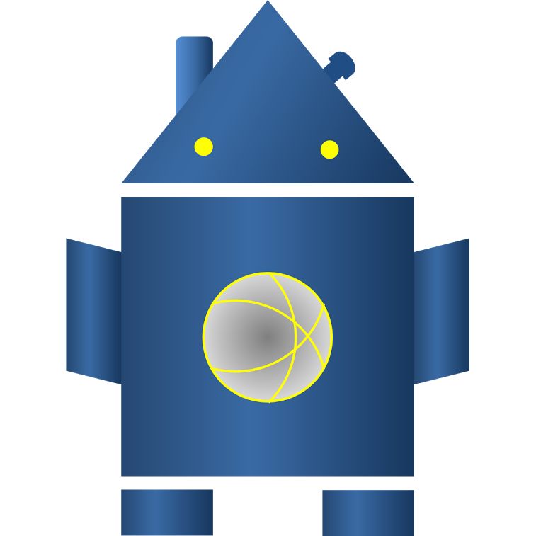

<!--
@license
Copyright (c) 2016 The Polymer Project Authors. All rights reserved.
This code may only be used under the BSD style license found at http://polymer.github.io/LICENSE.txt
The complete set of authors may be found at http://polymer.github.io/AUTHORS.txt
The complete set of contributors may be found at http://polymer.github.io/CONTRIBUTORS.txt
Code distributed by Google as part of the polymer project is also
subject to an additional IP rights grant found at http://polymer.github.io/PATENTS.txt
-->
<link rel="import" href="../../bower_components/login-polyform/login-polyform.html">

<dom-module id="my-login">

  <template>
  		<style>
	  		.centered {
	      		margin:0;
	      		padding:0;
	      	}
  		</style>
  		

  		<paper-dialog id="loginmodal" modal >
	        <paper-input id="username1" tabindex="1" hidden>
	        </paper-input>
	        <paper-input id="password2" tabindex="2" hidden>
	        </paper-input>

	      <login-polyform class="centered" on-login="handleLogin" credentials="{{credentials}}" submit="Connexion">
				
	      </login-polyform>
		</paper-dialog>
  </template>
  
  
  <script>
  
  
  Polymer({


	  is: 'my-login',
	  
	  
	  properties: {  
		 mainlayout: {
	      	type: Number,
	      	notify:true
	    	},
	     credentials: {
	          type: Object,
	          notify: true,
	          value:{}
	        },
	     header_auth :{
	          type: Object,
	          notify: true,
	          value:{}
	        }
	  },
	  
	  handleLogin: function(u) {
		  this.makeheaders();
		  this.fire('loginacces', this.credentials);
		  this.header_auth=this.credentials.header_auth;
	  }
	  
	  
      ,makeheaders: function(){
  		var obj = {};
  	    var tok = this.credentials.username + ':' + this.credentials.password;
  	    var hash = btoa(tok);
  	  	obj.Authorization= "Basic " + hash;
  	    this.credentials.header_auth= obj; 
      }
      
      ,openlogin: function(){
    	  this.$.loginmodal.open();
      }
      
      ,closelogin: function(){
    	  this.$.loginmodal.close();
      }
      
  });
  </script>

</dom-module>
